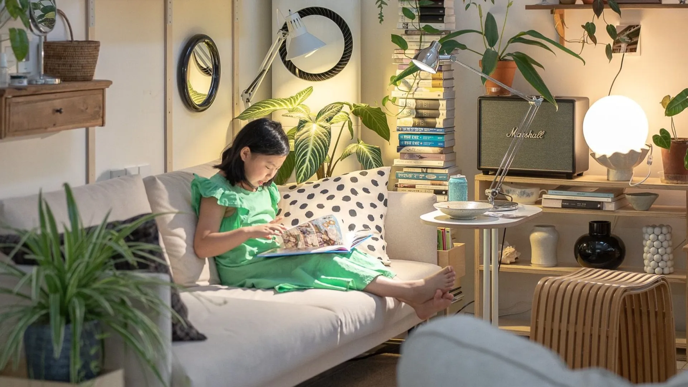
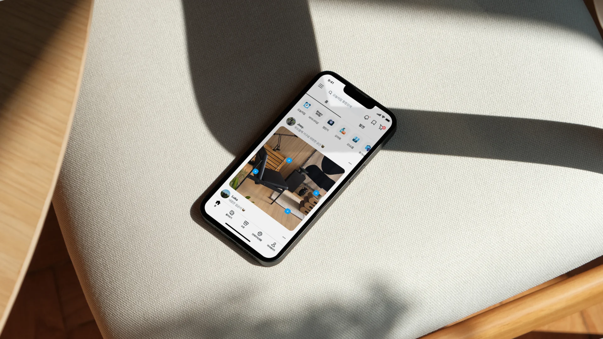

오늘의집의 시각 정체성을
외부에 펼쳐 보이는 공간.
이 라이브러리는 사용 매뉴얼이 아닙니다. 오늘의집이 무엇을 보고, 어떤 결로 그것을 다듬어 왔는지 — 시각 언어의 결정과 그 결정을 지탱하는 시선을, 우리 바깥의 분들에게 공개적으로 정리해 둔 페이지입니다.

우리가 보는 것
일상의 작은 풍경에서 출발합니다.
햇빛이 바닥에 닿는 각도, 식탁 위에 자리잡은 머그컵의 무게, 막 정돈된 침구의 결. 오늘의집의 시각은 이런 작고 구체적인 순간에서 출발합니다. 우리는 사람들이 자신의 공간을 가꾸고 일상을 만들어가는 그 풍경을, 가장 진정성 있는 모습으로 옮기는 일을 합니다.
그래서 우리의 시각 정체성은 컴포넌트의 카탈로그가 아니라, 그 풍경을 옮기기 위해 우리가 어떤 것을 끝까지 다듬었는가에 대한 기록에 가깝습니다.

이 라이브러리의 역할
매뉴얼이 아니라 진술입니다.
사내에서 프로덕트를 함께 만드는 디자이너·개발자가 참고하는 실무 문서는 따로 존재합니다. 이 라이브러리는 그 바깥에 서 있습니다 — 같은 결의 시각 언어에 관심을 둔 동종 업계 디자이너, 오늘의집의 일하는 방식이 궁금한 입사 지원자, 협업을 검토하는 파트너에게 우리가 누구인가를 보여주기 위한 페이지입니다.
따라서 여기에 정리된 내용은 "이렇게 쓰세요"가 아니라 "우리는 이렇게 봅니다"에 가깝습니다. 규칙보다 관점, 사양보다 시선이 먼저입니다.

무엇을 보여주는가
결정 이전의 시선까지.
색상 팔레트나 컴포넌트 사양은 결과물의 일부입니다. 이 라이브러리에서 더 중요하게 다루는 것은 그 결정이 만들어지기까지의 과정 — 어떤 디테일을 끝까지 다듬었고, 어떤 가능성을 의도적으로 제외했는가입니다.
Visual Language는 오늘의집이 시각을 다루는 네 가지 조형 원칙을 보여주고, Assets는 그 원칙이 실제로 형태화된 모습들을 큐레이션해 모았습니다. 두 흐름을 따라가다 보면, 자산의 결과를 넘어서 그 결과를 만들어낸 시선이 함께 드러납니다.